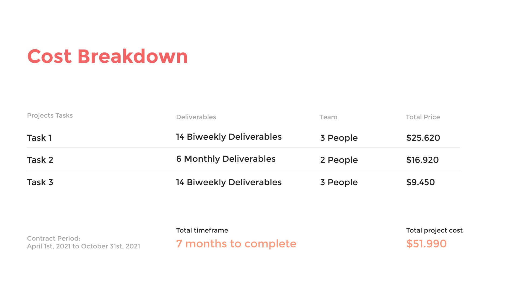
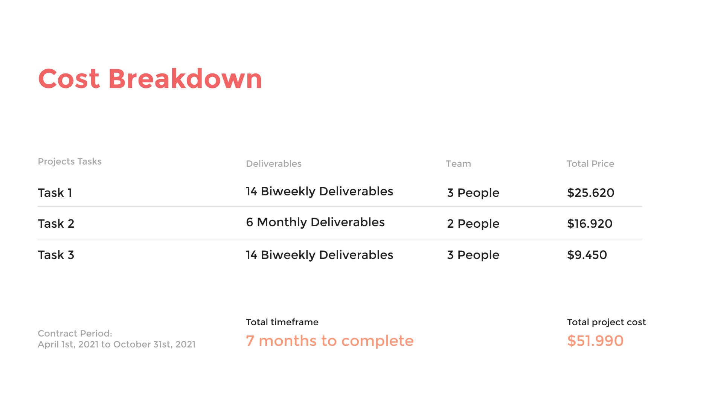
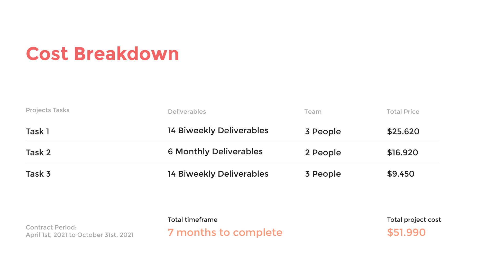

Process Breakdown
Project Management Tasks
 


On my career I had the pleasure to work with big companies and small entrepeneurs who helped me learn key aspects of a product lifecycle but also the details of marketing campaigns and customer experience. This exercise is an example of how I approach projects and some of the processes that I take into consideration.
